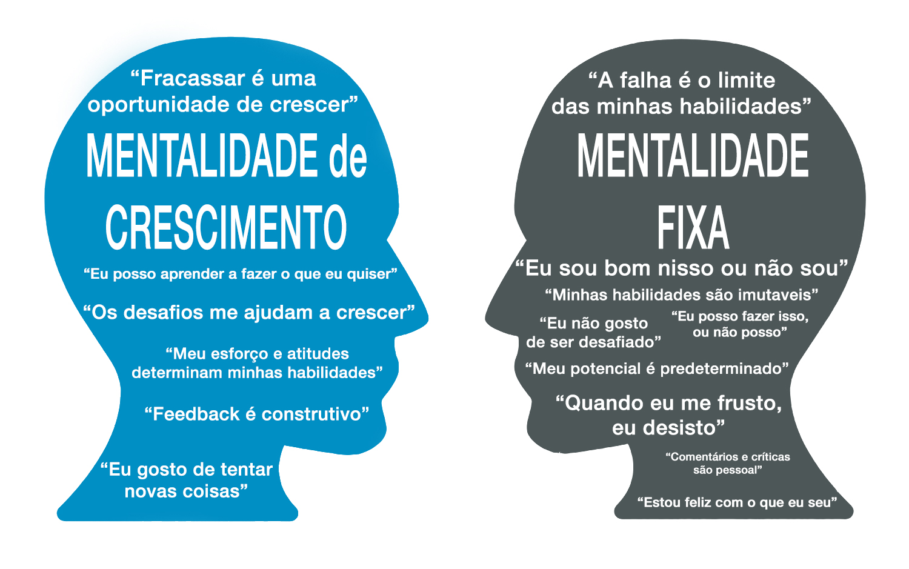

Ao final da aula, quero que meus alunos consigam entender mais sobre
Por Que Errar É Bom e sobre Mentalidade De Crescimento!
Tomar uma decisão errada faz parte da vida, tanto no trabalho como na vida pessoal.
Mas todo mundo merece uma segunda chance,pelo fato de ninguém ser perfeito.
Até porque ninguém nasceu sabendo, principalmente quando se está começando um novo trabalho ou uma nova carreira.
Errar faz parte da vida humana.
A mentalidade de crescimento é a crença de que nosso cérebro e habilidades não são fixos e podem melhorar com a prática certa.
A mentalidade de crescimento ajuda a nos concentrarmos no processo de aprendizagem e prática.
Mesmo se não atingirmos a meta final, ainda seremos vencedores, porque é o processo que faz o cérebro crescer.
E também com vários treinos de com a mentalidade de crescimento você ira conseguir decorar mais fácil lá na frente.
Aqui está alguns exemplos sobre Mentalidade De Crescimento e Mentalidade Fixa!
Muito se ouve falar sobre mindset, mas você sabe o que esse termo realmente significa? É possível descrevê-lo como a mentalidade que cada um de nós tem em relação à vida.
Em termos práticos, o conceito significa o conjunto de atitudes mentais que influencia diretamente nos nossos comportamentos e pensamentos.